Claw'd PetClaw'd vive arriba del Dock y te muestra qué está haciendo Claude Code. Piensa cuando piensa, y cuando necesita tu OK camina hasta la app y te dice exactamente qué te está pidiendo.
xattr -dr com.apple.quarantine /Applications/ClawdPet.app
Se pasea sobre tus íconos del Dock, sin taparte nada ni robarte el foco.
Puntitos mientras el agente trabaja. Sabés que está vivo sin mirar la terminal.
Camina hasta la app que necesita tu OK y te dice qué te está pidiendo.
Abrila, y en Preferencias ▸ Integración ▸ Conectar ahora. Instala el comando
y escribe los hooks en tu settings.json, con backup del que tengas.
No hay apps que configurar: descubre sola de qué terminal o editor viene cada aviso.
clawdpet notify --state needs_action --message "Build falló"
clawdpet thinking
clawdpet done "Terminó la tarea"El aviso de macOS aparece una sola vez. En versiones nuevas el diálogo ya no trae la opción de abrir igual, hay que darla desde Ajustes. Los pasos completos, con la alternativa por terminal, en la guía de instalación.